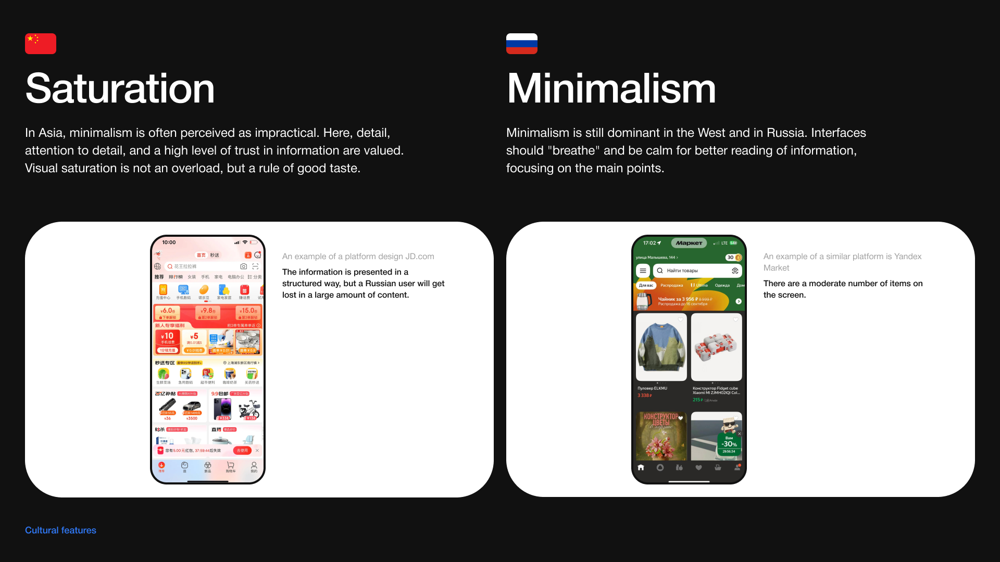

Проблема
Компания наращивает влияние на рынке РФ и хочет увеличить клиентуру среди россиян
Решение
Разработка дизайна операционной системы, отражающей культурные особенности жителей РФ
Результаты
Увеличение доли активаций до 80%;
Удержание (7 дней): до 70% пользователей;
Доля компании на рынке РФ 14% → 28%
О проекте
Transsion Holdings — производитель смартфонов Tecno и Infinix. Cпециально для пользователей из РФ компания решила сделать кастомный дизайн операционной системы HiOS, который будет отражать социально-культурный аспект жителей страны. За счет такой кастомизации смартфоны будут отличаться от своих конкурентов, что должно привести к повышению узнаваемости бренда среди жителей РФ. Сейчас доля компании ны рынке смартфонов в РФ — 14%. По итогам проекта мы ожидаем увеличение позиций до ~ 28%.
Участие проходило в формате тендера между несколькими крупнейшими дизайн-студиями, и мы его выиграли.

Проблемы
- Жесткая конкуренция среди китайских брендов (доля в РФ >70%)
- Невозможно выделиться на фоне остальных производителей
- Компания системно строит рост через локальную адаптацию
- Стандартный Android не учитывает локальные приложения
- Борьба за пользователя увеличивается, рынок просел. Нужно повышать ценность устройств
Цели проекта
- Провести глубокое исследования операционных систем, представленных на рынке
- Разработать концепт операционной системы, которая по существу отражала бы социально-культурные особенности жителей России
- Масштабировать концепт на все элементы дизайн-системы: иконки, always on display, виджеты и т. д.
Мои задачи
Я вызвался полностью взять на себя аналитическую часть, так как мне было интересно поизучать рынок и вывести конкретные поинты, которые помогут команде сделать дизайн. После исследования я участвовал в концепте.
Что я конкретно сделал:
- провёл анализ мобильных ОС и собрал презентацию (90+ слайдов)
- выявил ключевые дизайн-паттерны интерфейсов (3 конкретных)
- предложил дополнительное исследование мобильных приложений
- разработал дизайн-концепт системы.
Инсайты исследований ОС

Для анализа мы выбрали 10 операционных систем и оболочек, наиболее широко представленных в РФ: IOS (Iphone), HyperOS (Xiaomi), OneUI (Samsung), OxygenOS (OnePlus), ColorOS (Oppo), MagicOS (Honor), FunTouchOS (VIVO), HarmonyOS (Huawei), Pixel UI (Google), Nothing OS (Nothing).
1. Кастомизация стала ключевой функцией ОС
Современные системы позволяют пользователям:
- менять размер иконок
- настраивать виджеты
- менять цветовую палитру интерфейса.
2. Интерфейсы постепенно уходят от скевоморфизма
Большинство систем используют:
- минималистичные иконки
- простые формы
- нейтральные цветовые палитры.
3. Физичность интерфейса возвращается
Некоторые системы используют эффекты:
- стеклянных поверхностей
- мягких теней
- глубины элементов.
Инсайты из анализа приложений
Я решил пойти дальше: для полноты картины я предложил дополнительно сделать анализ дизайна мобильных приложений, а также проанализировать различия между дизайном в России и Китае. Такого запроса не было со стороны клиента, но такой глубокий анализ позволил бы сделать работу более качественно и лучше понять потребности и паттерны российской аудитории.
Российские интерфейсы часто используют:
- минималистичные элементы
- мягкие градиенты
- цифровой реализм
- аккуратные 3D-элементы.
Инсайты культурного анализа

Я также сравнил особенности китайского и российского дизайна интерфейсов.
Китайский дизайн
- яркие насыщенные цвета
- плотная информационная структура
- 3D-иконки и декоративные элементы.
Российский дизайн
- минимализм
- спокойная цветовая палитра
- плоские иконки
- акцент на функциональности.
Этот анализ помог определить направление будущей концепции.
Подробнее про исследования в полной версииКонцепция ver. 1

Я предложил концепцию «Индустриальная революция».
Она вдохновлена:
- российской инженерной школой
- индустриальным дизайном
- эстетикой технологических систем.
Основная идея — создать интерфейс, который отражает:
- точность
- функциональность
- инженерную эстетику.


Концепция ver 2

После первой презентации клиент выбрал 2 концепта из 5 — мой и концепт арт-директора. Для второй итерации нам нужно было усилить культурную составляющую.
Я переработал концепцию и представил обновлённую версию под названием “Tехническая эстетика”.
Концепт вдохновлён советским промышленным дизайном и журналом «Техническая эстетика».
Визуальный стиль сочетает:
- индустриальные формы
- ностальгические мотивы
- современный минимализм.


Результат
Проект полностью сдан заказчику, но уже передан в продакшн. Мы ожидаем увеличение метрик:
- Увеличение доли активаций до 80%
- Удержание (7 дней): до 70% пользователей
- Повышение узнаваемости бренда среди жителей РФ
- Доля компании на рынке РФ 14% → 28%

Рефлексия
Самой сложной частью проекта стало проектирование дизайна, основанного на культурном коде россиян. Поначалу было сложно «нащупать» тот самый подход, так как культура многогранна, и остановиться на чем-то одном было трудно.
После первой сдачи нам нужно было буквально за неделю адаптировать концепты под новые требования, что потребовало сильного брейншторминга и генерации идей.
У этого кейса есть более подробный вариант в BuildIn (формат Notion, работает без VPN). Если вы хотите подробнее почитать про процессы и исследования, то вам туда!